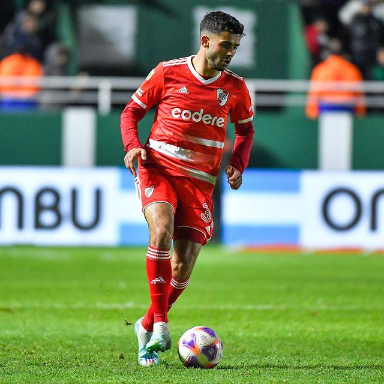

Ultima noticia!
Demichelis pierde a una de sus figuras para el partido contra Colón
La derrota del último sábado en el Estadio Claudio “Chiqui” Tapia quedó atrás. El Millonario dio vuelta de página y comenzó a preparar lo que será el próximo encuentro por la Liga Profesional. Este miércoles enfrentará a Colón de Santa Fe en otro duelo clave para acercarse al gran objetivo: lograr el título en el campeonato local. Claro que los hinchas que vayan al Monumental frente al Sabalero deberán esperar al menos un par de fechas más, ya que la derrota frente a Barracas Central y los resultados de Talleres y San Lorenzo impedirán que el Más Grande pueda dar la vuelta en la fecha 23.
Se trata de Pablo Solari, que fue amonestado por una fuerte discusión y ahora deberá cumplir una fecha de suspensión. Recién podrá regresar el sábado que viene, cuando el Millonario visite a San Lorenzo por la fecha 24 del certamen. La ausencia obligada de Pablo Solari no es un dato menor para el DT del Más Grande. Es que el ex Colo Colo es una de las piezas fundamentales de River en el ataque. Si bien alternó titularidades y suplencias, Martín Demichelis perderá al futbolista que más asistencias dio desde que asumió como DT: en lo que va de la Liga Profesional tiene 5 asistencias y está dentro del Top 5 de todo el campeonato. Más allá que el último sábado arrancó desde el banco, su ingreso en el segundo tiempo mejoró al equipo por su desequilibrio por la banda derecha. Ahora, deberá pensar en otras alternativas en el ataque para vulnerar a Colón.
Gran noticia para River: Flamengo se bajó de las negociaciones por De La Cruz

El poderío de los clubes brasileros siempre es un dolor de cabeza para los equipos argentinos. Sobre todo para aquellos que apuestan a la Copa Libertadores como gran objetivo. Con un mercado de pases abierto a mitad de temporada, la competencia por reforzar los planteles es feroz. Y en ese fino equilibro entre por mantener lo que hay e incorporar en la medida que el presupuesto lo permita se encuentra River, que busca volver a pisar fuerte en el terreno internacional.
En medio de la disputa por la fase de grupos de la Copa Libertadores llegó a River una oferta por un jugador muy importante y desde un competidor directo en el certamen más imoportante del continente. El Flamengo vino con todo por Nicolás De La Cruz. La chance de irse a uno de los clubes más populares del fútbol de Brasil estuvo tan latente que hasta su representante tenía prácticamente todo acordado con el Mengao. Lo mismo sucedió con el Liverpool de Montevideo, que todavía comparte con el Millonario el 50% de los derechos económicos.
Más allá del fuerte interés del Flamengo y de recibir una oferta por el 100% que rondaba los ocho millones de dólares, River se mantuvo firme en su postura: no vender al futbolista a un competidor directo en la Copa Libertadores. Claro que el futbolista tenía una cláusula de rescisión valuada en 16 millones de dólares y que en caso de ejecutarla, el Más Grande no podía hacer demasiado para sostener al volante uruguayo. Se produjeron reuniones, intercambiaron llamados, se mantuvieron reuniones, pero el Millonario nunca se movió de ese monto. Y desde Río de Janeiro decidieron darle un corte definitivo al tema. Marcos Braz, presidente de Flamengo, habló este lunes en conferencia de prensa y confirmó que la decisión del Mengao fue bajarse definitivamente de las negociaciones. Además, explicó los motivos: “De La Cruz es un futbolista calificado para estar en nuestro club, pero River se sentó encima de la cláusula, que está cerca de los 16 millones de dólares, y Flamengo entiende que no es razonable pagarla”, sentenció el directivo.
De esta manera, el Más Grande seguirá disfrutando de los servicios de Nicolás De La Cruz, que renovó su contrato con River a fines del 2022, a pocos días de quedar con el pase en su poder y pocas horas antes de comenzar su participación en la Copa del Mundo junto a la Selección de Uruguay. El mediocampista tiene vínculo vigente hasta diciembre de 2024 y todo parece indicar que seguirá en el Millonario al menos hasta la finalización de esta temporada. Salvo que llegue una oferta irresistible de Europa o de algún mercado que esté dispuesto a ejecutar su salida.